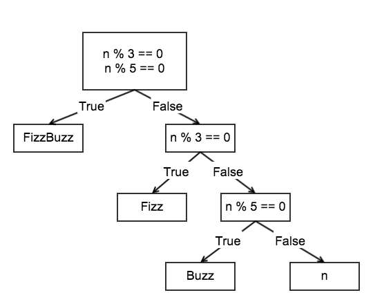
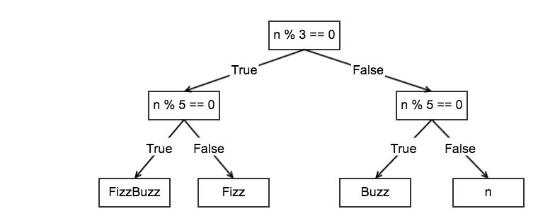

Generalisation of FizzBuzz Problem
The original FizzBuzz problem is to write a function that takes a natural number \(n\) and return "Fizz", "Buzz", or \(n\) itself depends on whether \(n\) is divisible by 3, 5, both of them, and neither of them. \[ f(n) = \begin{cases} \text{Fizz} & \text{ if } n \% 3=0 \\ \text{Buzz} & \text{ if } n \% 5=0 \\ \text{FizzBuzz} & \text{ if } n\%3=0 \text{ and } n\%5=0 \\ n & \text{otherwise} \end{cases} \] It can be easily genaralised to: \[ f(n) = \begin{cases} output_1 & \text{ if } condition_1 \\ output_2 & \text{ if } condition_2 \\ ...\\ output_n & \text{ if } condition_n \\ output_{n+1} & \text{otherwise} \end{cases} \] The most natural solution is:
def fizzbuzz1(n):
if n%3==0 and n%5==0:
return "FizzBuzz"
elif n%5==0:
return "Buzz"
elif n%3==0:
return "Fizz"
else:
return n
The problems of this solution are
- The order of the conditions is significant.
Suppose we test for the divisibility of individual digit before both of them, we would not get "FizzBuzz" at all.
- The conditions of divisible by 3 and that by 5 sometime are tested twice.
With a little number theory, the first condition can be simplify to \(n\%15=0\) as shown in **fizzbuzz2** and the second problem will be gone. It is simple in this case to construct a simple condition that is the conjunction of two others. However it will be more difficult when we generalise the problem and there are more condtions to be considered, in which case the number of combination of conditions will increase exponentially and the hope of finding a simpler condition which is equivalent to the combination will decrease exponentially.
def fizzbuzz2(n):
if n%15==0:
return "FizzBuzz"
elif n%5==0:
return "Buzz"
elif n%3==0:
return "Fizz"
else:
return n
The decision flow of the program can be visualised by the tree below

And the tree can be rebalanced as below

Translating directly from the tree, we can write the function in a highly nested form.
def fizzbuzz3(n):
if n%3==0:
if n%5==0:
return "FizzBuzz"
else:
return "Fizz"
else:
if n%5==0:
return "Buzz"
else:
return n
If we disregard efficientcy, the function can be rewritten in a symetrical form in the sense that the if clauses can be rearranged at will.
def fizzbuzz4(n):
if n%3==0 and n%5==0:
return "FizzBuzz"
if n%5==0 and n%3!=0:
return "Buzz"
if n%3==0 and n%5!=0:
return "Fizz"
if n%3!=0 and n%5!=0:
return n
In fact **fizzbuzz3** is the most natural way to write the function given the problem is expressed in the term of a binary decision tree. But the highly nested structure prevents us from generalising the solution into problem involved more than 2 conditions.
**fizzbuzz4** offers us a natural way to generalise the solution. We just have to add more if-clauses. Besides being extremely tedious, for if there are \(n\) conditions, then we need to write \(n\) if-clauses to cover all the cases. Not the mention it is highly inefficient to test for the same condition over and over again and disregard the fact that \(n\%k=0\) and \(n\%k \neq 0\) is mutually exclusive.
We can do better by thinking in a functional way. The function \(f\) can be viewed as a series of transformation:
\[ n \rightarrow (n\%3==0,\text{ }n\%5==0)::(boolean,boolean) \rightarrow result \]The input \(n\) is transformed into a pair of boolean value indicated which condition is satisfied by it. The output of the function can be characterised as a direct mapping from the boolean pair into the desired output value. **fizzbuzz5** implements the idea above.
def fizzbuzz5(n):
booleanArray = ["0","0"]
mapping = {"11":"FizzBuzz",
"10":"Fizz",
"01":"Buzz",
"00": n}
if n%3 == 0:
booleanArray[0] = "1"
if n%5 == 0:
booleanArray[1] = "1"
index = "".join(booleanArray)
return mapping[index]
The function can be easily generalised by using booleanArray of more that 2 elements, adding more item into the mapping, and add more if-clauses. The benefit of **fizzbuzz5** is that if there are \(n\) basic conditions, and all the conditions are generated by the various combination of these basic combination, we only have to write \(n\) if-clauses. Whereas **fizzbuzz4** would require \(2^n\) if-clauses, the depth of **fizzbuzz3** would be of order \(n\), and **fizzbuzz2** as well as **fizzbuzz1** can't be generalised easily.
However, the mapping of booleanArray to the desired value still consists of \(2^n\) values. This condition can't be improved if the desired values are independent from each other. In this case, however, the result can be seen as a combination of some basic result, i.e. the 2 basic results are "Fizz" and "Buzz", and the other result is the concatenation of the 2 strings. In other word, the problem can be simplified if there are some basic conditions, their corresponding basic desired output and the result of the combination of basic conditions is also the combination of basic desired output.
In symbol:
\[ \begin{align} c_1 &\rightarrow o_1 \\ c_2 &\rightarrow o_2 \\ &...\\ c_n &\rightarrow o_n \\ (((c_i \wedge c_j) \wedge ...) \wedge c_k) &\rightarrow (((o_i \oplus o_j) \oplus ...) \oplus o_k) \end{align} \] \(c_i \wedge c_j\) denotes the conjunction of \(c_i\) and \(c_j\), i.e. (\(a\) and \(b\)). \(o_i \oplus o_j\) denotes the combination of output \(o_i\) and \(o_j\)Imagine that, given a number \(n\), we scan through the conditions and build up the desired output according to which conditions are satisfied by \(n\).
In the following code, \(\oplus\) is just string concatenation.
def fizzbuzz6(n):
result = ""
if n%3==0:
result += "Fizz"
if n%5==0:
result += "Buzz"
if result == "":
result = n
return result
We can refactor the code and get a more general solution.
We represent the conditions by functions:
def c1(n):
return n % 3 == 0
def c2(n):
return n % 5 == 0
Similarly for the output:
def o1():
return "Fizz"
def o2():
return "Buzz"
Collect the basic conditions and outputs into a mapping.
from collections import OrderedDict
cePair = OrderedDict({c1:o1,
c2:o2})
Define the appropriate \(combine\) function
def combine(x,y):
try:
return x + y
except TypeError:
return y
And finally the function can be written as:
def fizzbuzz7(n):
initial = n
for c, e in cePair.items():
if c(n):
initial = combine(initial,e())
return initial
Now the fizzbuzz function can be generalized to
including more conditions and results
by just adding more elements into
the list cePair, without having to touch
the function body.
Just to show that all versions of the function are the same:
list1 = [fizzbuzz1(x) for x in range(1,101)] list2 = [fizzbuzz2(x) for x in range(1,101)] list3 = [fizzbuzz3(x) for x in range(1,101)] list4 = [fizzbuzz4(x) for x in range(1,101)] list5 = [fizzbuzz5(x) for x in range(1,101)] list6 = [fizzbuzz6(x) for x in range(1,101)] list7 = [fizzbuzz7(x) for x in range(1,101)] assert list1 == list2 assert list2 == list3 assert list3 == list4 assert list4 == list5 assert list6 == list7
This blog post is also in the form of a ipython notebook. You can view and download the notebook here.